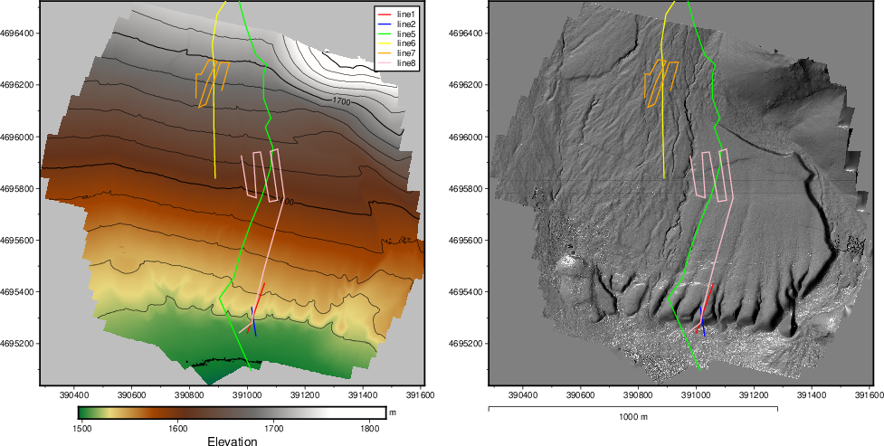

Getting an Overview
There are many ways to visualize the profile locations. Using QGIs is arguably most straightforward. Here we explore the use of PyGMT in order to learn somethign new.
{kind=link}
Here is a function which uses our DEM and the GPR turning point coordinates as input.
def MakeOverviewFigure(FilePath2DEM,FilePath2Coordinates,NameOverviewFigure):
"""
Make an overview Figure using PyGMT
"""
lgrid=FilePath2DEM
fig = pygmt.Figure()
# This is the DEM
fig.grdimage(lgrid, cmap='geo', frame=True)
fig.grdcontour(grid=lgrid, interval=20, annotation=100)
fig.colorbar(frame=["a100", "x+lElevation", "y+lm"])
fig.basemap(map_scale='jBL+w1000+o17.5c/-1.0c+lm')
PlotAllLines(FilePath2Coordinates,fig)
fig.legend()
# Have the hillshade as a right panel
# Shift plot origin of the second map by 12.5 cm in x direction
fig.shift_origin(xshift="17.5c")
# This is the Hillshade
dgrid = pygmt.grdgradient(grid=lgrid, radiance=[270, 30])
fig.grdimage(dgrid,transparency=0,cmap='gray', frame=True)
PlotAllLines(FilePath2Coordinates,fig)
fig.savefig(NameOverviewFigure)
print(f'The Figure is in {NameOverviewFigure}.')